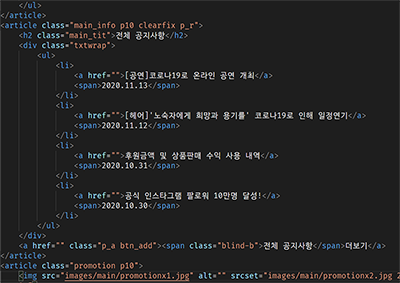
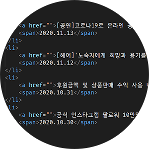
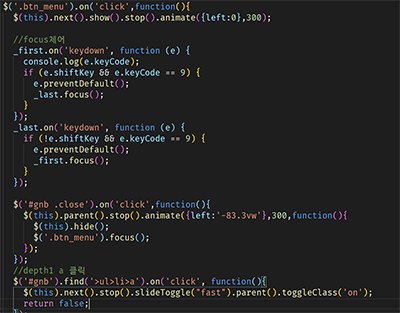
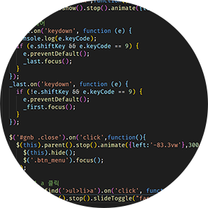
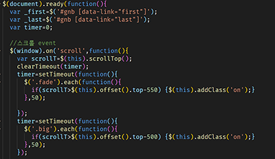
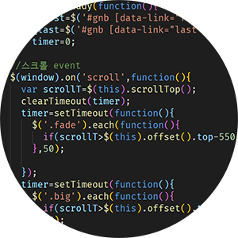

PROJECT02. WHAT
주제
다양한 분야의 아티스트들의 재능기부 활동을 소개하고 함께 활동 할 팀원 모집 및 후원금 모으기를 홍보하는 웹페이지 기획
디자인 컨셉(Design concept)
Color
black&white 컨셉이지만 눈의 피로를 적게하기 위해 진한 gray색을 사용하였습니다
- 검은색#282828
- 흰색#F6F4F4
- 하늘색#44AEC6
Fonts
디자인컨셉에 맞게 고딕체를 사용하였습니다
Point
#Cormorant
WHAT 재능기부
WHAT 재능기부
본문
#Poppins
WHAT 재능기부
WHAT 재능기부
이렇게 코딩했어요


HTML5를 사용하여 의미있는 마크업을 하여 사용자가 보다 사용하고 이해하기 쉽도록 구성


조건문을 통해 키보드 제어 접근성을 지키고, 네비게이션 안에서만 포커스가 이동하도록 제어


스크롤 이벤트와 fade효과를 통해 지루하지 않도록 효과를 줌